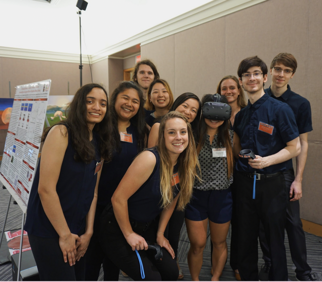
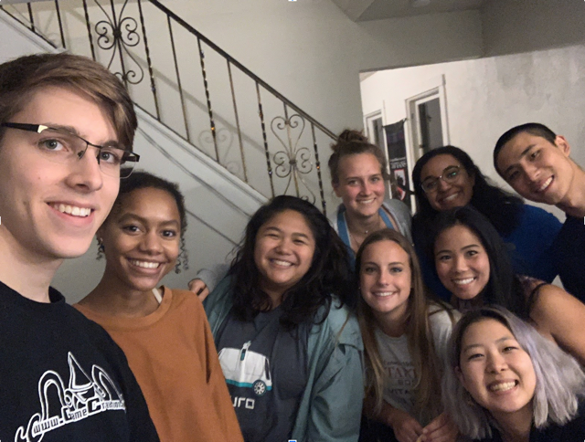

What does it mean to be a good mentor?
When I mentor students, I ensure that the learning environment is one where students are comfortable enough in that they do not feel threatened, are encouraged to think aloud, and feel a sense of belonging. I treat students with courtesy and dignity, and model this in front of other students to set the climate of the lab. Building strong relationships fosters a sense of trust, and working together on research projects in which students feel a sense of belonging ultimately enhances the quality of the work. This means facilitating bonding activities outside the lab such as...
Check out our activies:

Our Team

RA Emery Graduating

RA Carter Graduating

Holiday Festivities - Stocking Making!

Holiday Festivities - We were banned because of the glitter

Holiday Festivities - Displayed in the lab space

Meeting of the Minds - Awarded 2nd Place for Outstanding Research in Psychology - Kristy killin' it

Meeting of the Minds - Awarded 2nd Place for Outstanding Research in Psychology - Carter killin' it

Meeting of the Minds - Awarded 2nd Place for Outstanding Research in Psychology - VR Team!

Meeting of the Minds - Awarded 2nd Place for Outstanding Research in Psychology - Dom killin' it

Meeting of the Minds - Awarded 2nd Place for Outstanding Research in Psychology - Whole Team!
Jar Making- Here’s the system of managing 17 undergraduate students - a little friendly competition based on game theory and some good old behaviorism via Skinner:
+1 doubloon for completing lab tasks,
+2 doubloons for problem-solving,
+3 doubloons for critical thinking skills on the spot,
-1 doubloon for being late,
-2 doubloons for missing lab hours,
-3 doubloons for forgetting directions or skipping lab protocol steps.
The undergraduate student with the most doubloons at the end of the year receives an embroidered white lab coat…. a true #scientist

Jar Making- Here’s the system of managing 17 undergraduate students - a little friendly competition based on game theory and some good old behaviorism via Skinner:
+1 doubloon for completing lab tasks,
+2 doubloons for problem-solving,
+3 doubloons for critical thinking skills on the spot,
-1 doubloon for being late,
-2 doubloons for missing lab hours,
-3 doubloons for forgetting directions or skipping lab protocol steps.
The undergraduate student with the most doubloons at the end of the year receives an embroidered white lab coat…. a true #scientist

Jar Making- Here’s the system of managing 17 undergraduate students - a little friendly competition based on game theory and some good old behaviorism via Skinner:
+1 doubloon for completing lab tasks,
+2 doubloons for problem-solving,
+3 doubloons for critical thinking skills on the spot,
-1 doubloon for being late,
-2 doubloons for missing lab hours,
-3 doubloons for forgetting directions or skipping lab protocol steps.
The undergraduate student with the most doubloons at the end of the year receives an embroidered white lab coat…. a true #scientist

The Scavenger Hunt of the Century - Entire Team Jumping (Must Be in Mid-Air) on The Cutt

The Scavenger Hunt of the Century - Taking a nap in a classroom

The Scavenger Hunt of the Century - Planking on the fence

The Scavenger Hunt of the Century - Human pyramid in front of the fence

The Scavenger Hunt of the Century - Pretending your tourists taking selfies with Walking to the Sky
The Scavenger Hunt of the Century - Entire team’s reflection in something other than a mirror

The Scavenger Hunt of the Century - Posing like trees, under a tree

The Scavenger Hunt of the Century - Oldest Member of the team visiting his freshmen room

The Scavenger Hunt of the Century - With an animal

The Scavenger Hunt of the Century - Picture with a policeman

The Scavenger Hunt of the Century - Selfie with entire team on one bench

The Scavenger Hunt of the Century - Getting a hug from a stranger, Hugging a stranger, Having a stranger give a teammate a piggy back ride, and Proposing to a stranger

The Scavenger Hunt of the Century - Spelling out CMU with your bodies on The Mall

The Scavenger Hunt of the Century - Posing like Dr. Mao Yisheng